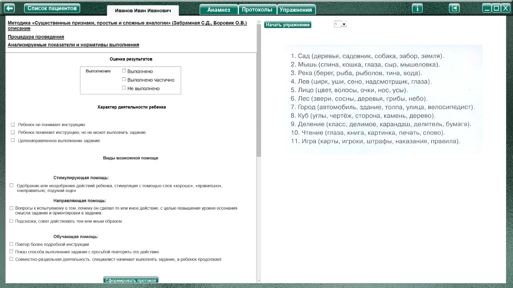
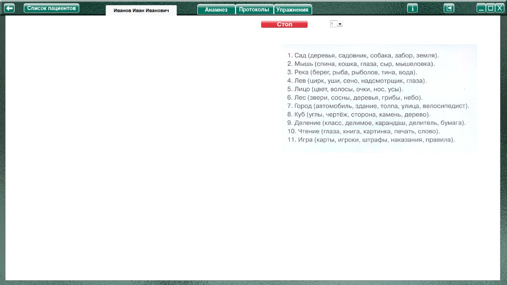

Методика «Существенные признаки, простые и сложные аналогии» (Забрамная С.Д., Боровик О.В.)
Методика «Существенные признаки, простые и сложные аналогии» (Забрамная С.Д., Боровик О.В.) описание
Процедура проведения.
В задании 1 даны «Существенные признаки» (для детей 9—10 лет)
В задании 2 даны «Простые аналогии» (для детей 10—12 лет).
В задание 3 даны «Сложные аналогии» (для детей 12—14 лет).
Инструкция к методике 1 «Существенные признаки»:
«Посмотри, перед скобками слово, а в скобках — несколько слов. Надо выбрать (найти) только
два из них, самых главных, которые определяют слово, стоящее перед скобками, без чего этот предмет не может быть». Первые примеры читаются специалистом.
Инструкция к методике 2 «Простые аналогии»:
В методике «Простые аналогии» первые 2—3 примера выполняются специалистом и в ходе этого дается инструкция: «Смотри, слева два слова. Сверху «лошадь», внизу «жеребенок». У лошади жеребенок. Это ее детеныш. Справа — длинная черта. Над чертой только одно слово, которое относится к слову «корова» так же, как слово «жеребенок» относится к слову «лошадь».
Инструкция к методике 3 «Сложные аналогии»:
В методике «Сложные аналогии» допустимы пояснения и организующая помощь при выполнении всех примеров.
Во избежание трудностей, связанных с несформированностью навыка чтения, целесообразнее слова, данные в заданиях, читать экспериментатору, а ребенку предложить следить зрительно (или на слух).
Анализируемые показатели и нормативы выполнения
Эти методики требуют достаточно сформированного уровня мыслительных операций, запаса общих представлений об окружающем, знание родовых категорий.
Дети с нормальным умственным развитием указанного возраста понимают инструкцию и при оказании им помощи в виде наводящих и уточняющих вопросов выполняют эти задания.
Детям с задержкой психического развития требуется значительная помощь. Они часто отвечают наугад или ориентируются на случайные ассоциации.
Умственно отсталые дети в указанном возрасте не понимают цели задания, и помощь оказывается малоэффективной. Лишь в некоторых, наиболее легких задачах при совместном со взрослым решении находят нужные слова. Особенно сложны для умственно отсталых детей методики «Простые аналогии» и «Сложные аналогии». Даже в более старшем возрасте (13—15 лет) данные задания ими самостоятельно не выполняются.
Оценка результатов
Характер деятельности ребенка:
Виды возможной помощи:
Стимулирующая помощь
Направляющая помощь:
Обучающая помощь:
Протокол фиксации результатов исследования
_________________________________ _______________
ФИО Дата рождения
Методика |
Существенные признаки, простые и сложные аналогии |
Автор методики (адаптации, модификации) |
Забрамная С.Д., Боровик О.В. |
Цель: |
Выявить умение выделять главные существенные признаки; устанавливать логические связи и отношения между понятиями; направленность мышления; запас и точность представлений об окружающем мире. |
Дата / специалист |
|
Результат: вывод об уровне развития |
|
Примечание |
|
Процесс выполнения диагностической методики |
|
№ |
Факт выполнения / время |
Характер деятельности ребенка |
Виды помощи |
Логика заполнения протокола
Заполняется автоматически
Имя специалиста – логин при входе в программу.
Дата – дата и время прохождения упражнения в формате дд.мм.гггг. чч:мм
Факт выполнения / - заполняются в зависимости от выбора специалиста в разделе «Оценка результатов».
/ время – время, затраченное на выполнение задания.
Ячейки «Характер деятельности ребенка», «Виды помощи» заполняются в зависимости от выбора специалиста в разделе «Оценка результатов».
Остальные ячейки заполняются (правятся) специалистом самостоятельно.
Выполнение упражнения.

Выбрать в меню номер задания и нажать кнопку «Начать упражнение» (включая секундомер, закрывая область оценки результата и открывая задание на весь экран).

Выполнить задание согласно пункту «Процедура проведения». По окончании задания нажать кнопку «Стоп», открывая поле оценки результата. Специалист выбирает (или вписывает самостоятельно) факт выполнения, виды помощи и характер деятельности ребенка, затем по нажатию кнопки «Сформировать протокол» формируется протокол выполнения задания.
Только после формирования протокола можно приступить к выбору и выполнению следующего задания!